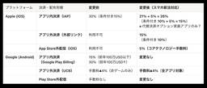
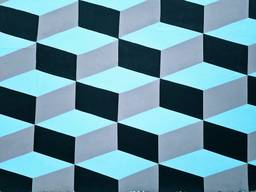

企業テックブログRSS
フィード
人気フィード
ブログ一覧
Pairs Engineering - Medium
https://medium.com/eureka-engineering?source=rss----5c512e0ddc60---4
Learn about Pairs’ engineering efforts, product developments and more.
フィード
dbt × Elementaryで”放置されない”データ監視の運用体制を作った話
Pairs Engineering - Medium
2日前
「AI Coding Agent」✕「モノレポ」で 2 つのアプリケーションを爆速かつ堅牢に作る
Pairs Engineering - Medium
3日前
自宅k8s clusterインシデント 〜Claude Codeで思い出のPersistent Volumeを爆破してしまったはなし〜
Pairs Engineering - Medium
4日前

日本のスマホ新法施行とモバイルアプリケーションプラットフォーム手数料の変更
Pairs Engineering - Medium
6日前
ペアーズのデザインシステムにおける、命名規則を決める議論プロセス
Pairs Engineering - Medium
7日前

「趣味の開発」から「届ける開発」
Pairs Engineering - Medium
7日前
機能開発と技術改善の両立
Pairs Engineering - Medium
9日前
理解しにくい設計を問い直す試み ─ SwiftUI を題材に
Pairs Engineering - Medium
9日前
Developer Experienceの向上を目指して11万行のOpenAPI JSONをTypeSpecに移行した話
Pairs Engineering - Medium
10日前
Media Mix Modeling: Too Many Parameters, Too Little Data
Pairs Engineering - Medium
11日前